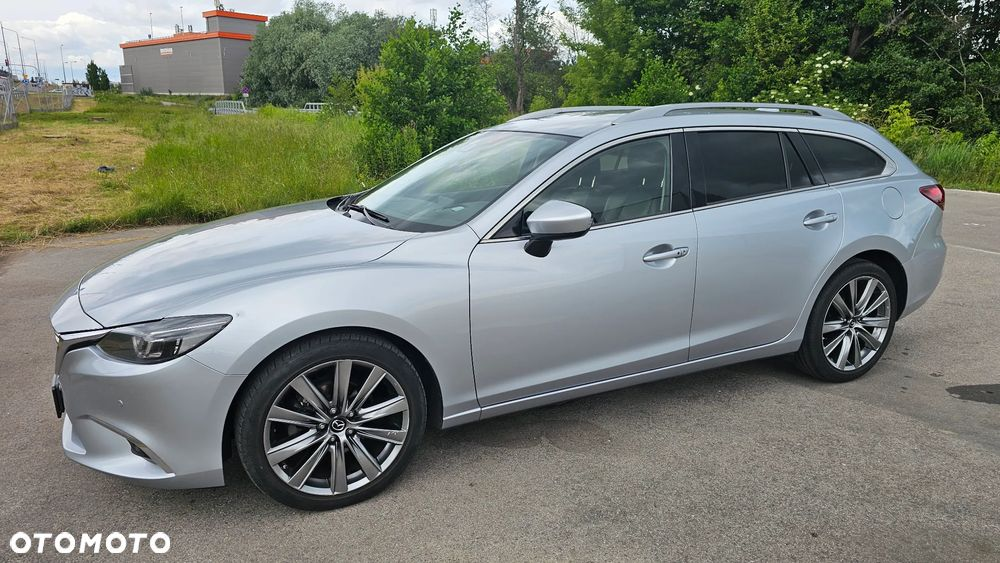

Witam Wszystkich,
Sprzedaję swoje autko jakim jeżdżę od 2019 roku.
Jak kupowałem miało około 83 tys przebiegu, teraz jest ponad 220 tys i nigdy mnie nie zawiodło! :)
Mazda garażowana była cały czas w garażu podziemnym, lakier był woskowany ( środkami Creamikker), a skóry zabezpieczałem środkami RR Customs ( na foto).
Auto było serwisowane w Jaksa Auto, w Piasecznie. Załączam zdjęcie i też do wglądu oczywiście potwierdzenia przeglądów i wymian olejów ( co około 10 tys.).
W 2024 kupiony był nowy akumulator, więc dodaję też gwarancję, bo jeszcze obowiązuje.
W maju podczas ostatniej wymiany oleju był też zmieniane klocki tył.
W Salonie Mazdy instalowana była fabrycznie OMEGA Immo, oraz ja dokupowałem instalacje Android Auto.
Auta chyba przedstawiać nie trzeba, mega fajny i dynamiczny silnik, a do tego spalanie nie odstrasza :) załączam screen z apki, w której wpisywałem każde tankowanie. Dla chętnych mogę pokazać więcej statystyk :)
Generalnie z tym autem nie działo się nic poważnego. Były 3 szkody parkingowe. Ale za każdym razem w serwisie Mady zgodnie z ich polityką były wymieniane wszystkie elementy na nowe. Mam fotki dla ciekawskich, więc prześlę zainteresowanym. Historię auta można oczywiście sobie sprawdzić.
Jestem też otwarty na podjechanie do jakiegoś warsztatu w okolicy jeśli kupujący będzie miał takie życzenie.
Do auta dokładam drugi komplet kół z oponami zimowymi. Na ostatnich trzech zdjęciach widać jak one wyglądają.
Zapraszam do oglądania! I jednocześnie podziękuję za telefony od handlarzy, chcących urwać 30% ceny. Od razu ich przestrzegam, że auto posiada ryski i odpryski od kamyków! Bo nie jest nowe! :)
